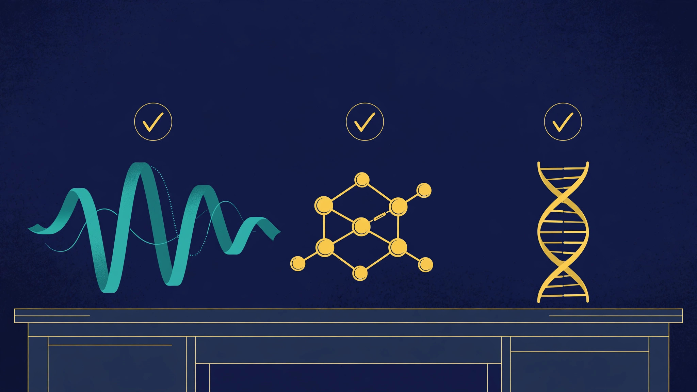

Projects · BioDAO tools · Verified 2026-11-06/07
BioDAO tools — what is verified

Every biology and longevity tool in the Foundation account, checked live against the GitHub API and by curl — what is built, what is a stub, what is a fork, and what does not exist yet. Accuracy over coverage: nothing on this page goes beyond what the inventory verified.
Source for every claim on this page: the BioDAO tools inventory of 2026-11-06/07, built from the GitHub REST API, raw README fetches, repository file listings, and curl status checks, on top of the 2026-11-05 review of 56 repositories. The account now lists 90 public repositories, up from 56 in that review; the growth is mostly forks and new agent-site repositories. The inventory verified 15 public BioDAO-related repositories plus 1 private repository that could not be verified unauthenticated.
The verified tools
Four repositories carry real tool documentation. Three more are live sites or agent sites with real content. The rest are stubs, empty, or unverifiable — listed below under their own heading so nobody mistakes them for built systems.
AGI-Biotech-tool — S18, with S11 overlap
A local molecular workspace for drug discovery in headset or browser, focused on neurogenetic targets (ALS, Parkinson's, Shriners Children's conditions). Docking plus OpenMM dynamics, 60 targets verified against UniProt, 21 public databases listed as sources, hash-chained provenance. 340-line README, last activity 2026-10-12. Licence: Proprietary — no right to use, copy, modify, or distribute without a separate written agreement. Its own README states its limits: docking scores are a Vina re-implementation for ranking, not affinity; its redock benchmark passes 2 of 4 cases; values marked [SYNTHETIC] are placeholders, not measurements; a BigQuery panel has not been run end to end; and nothing it produces is a clinical, diagnostic, or dosing recommendation.
Wild-Animal-Voice-Engine — S18 (WAVE open core)
Open, MIT-licensed pipeline turning raw environmental audio into structured animal-vocalization signals. A fork of the WAVETranslator project. Small Python pipeline: audio ingest, Superlet Transform time-frequency method, model adapters over NatureLM and Perch 2.0 behind one interface, command-line runner. README status, in its own words: early scaffold, but runnable end to end today — through a reference detector; the NatureLM and Perch 2.0 adapters are interface and stubs only, and real inference is listed as next work. Last activity 2026-07-18.
genomic-go-platform — S27 (S28 ambiguous)
Agent-based research platform for genomics, proteomics, and drug development with AI agent swarms. A fork of AGI-Corporation/genomic-go-platform, missed by the 2026-11-05 review. Its 651-line README claims 35 agent swarms, about 75 agents per swarm, AlphaFold3, molecular dynamics, compound generation with ADMET validation, and swarm categories including drug discovery, longevity, fertility, and regenerative medicine — but the code holds only about six source files and one test file, last committed 2026-03-01, eight months stale at the time of the check, with no verified deployment, demo, or run status. Treat the README scale claims as the fork's claims, not as verified built capacity. Longevity appears here as a claimed swarm category, not as a built system, and no longevity outcome is claimed on this page.
belugasounds — S18 (WAVE open core)
Machine-learning detection and classification of beluga whale calls in hydrophone recordings from Cook Inlet, Alaska. A fork of a Microsoft AI for Earth project with NOAA Alaska Fisheries Science Center, not org-original. Four convolutional models as an ensemble, six sequential Python scripts, and a published paper (Journal of the Acoustical Society of America 147, 1834, 2020). Last committed 2020-04-24; its population figures are dated January 2020 and must not be presented as current.
bioacoustics.cloud — S18 (WAVE live site)
The WAVE bioacoustics platform, live and returning 200, hosted on Vercel. Repository: bioacoustics-cloud — a single-page static site, README 19 lines, content migrated from the live Vercel-hosted site. Open to-dos in its README: the contact form is unwired, video identifiers are unfilled, and footer social links are placeholders. Its sibling repository bioacoustics-cloud-pages holds a 96-file regeneration dated 2026-11-06, described in its own deploy note as local staging, not deployed; its GitHub Pages address returns 404.
WAVE agent site — S18
Virtuals Protocol agent site for WAVE, live and returning 200. Repository: wave.agifuturefoundation.org — index, about, jobs, hire, agent.json, llms.txt, sitemap. Its README is present but 0 bytes. Six listed ACP jobs and one subscription, priced in the chart below. Its console shows no deployed instance, so a hire cannot be fulfilled until an instance is deployed, and a hosting payment must be settled before redeploy.
ALS Researcher agent site — S11 overlap / S18
Virtuals Protocol agent site for the ALS Researcher, live and returning 200, described as developing a synthetic compound library. Repository: als.agifuturefoundation.org — index, about, jobs, hire, agent.json, llms.txt, sitemap. Its README is present but 0 bytes. Six listed ACP jobs and one subscription, priced in the chart below. Listed, with no live instance verified, so a hire fulfills only after its instance is deployed.
Stubs, empty, and unverifiable — not built systems
| Repository | Series | What it verifiably is |
|---|---|---|
| genomic-site | S27 (S28 ambiguous) | Landing stub only: 6-line README, no substantive code. The substance, if any, is in genomic-go-platform. |
| diagnosticx-site | S3 | Landing stub only: 6-line README, no code. Its README repeats a 66-W3 figure that conflicts with the verified 33-series list; the figure is not repeated here as fact. |
| robotics-site | S30 | Landing stub only: 6-line README, no code. Same 66-W3 conflict as diagnosticx-site; not repeated here as fact. |
| toxicology | None assigned | Title plus one sentence only, 3 lines, no code or data. Ecology and cleanup-adjacent, not assigned to any W3 series number. |
| Insidr-W3LLC-Agentic-Corporate-Manager | Governance layer | Title only, 3-line README. DAO tooling that would plausibly govern all series including BioDAO; nothing verifiable is built here. |
| FiduciaryCorporateShield | Governance layer | Title only, 3-line README. Governance and fiduciary tooling; nothing verifiable is built here. |
| wave-site | S18 | Empty: no commits, no README, 0 KB. A shell only; not described as a built site. |
| agi-corp-worlds | S30 only, among its DAOs | Private: unauthenticated API returns 404, so it could not be re-verified live. Per the 2026-11-05 review it names six focus-domain DAOs (Cancer, Robotics, Ecology, Climate, Education, Public Health); only Robotics matches a numbered series. World counts inside that README disagree with each other, so no count is quoted here. |
Licence split: the WAVE core is MIT; AGI-Biotech-tool is Proprietary. Do not call the BioDAO toolset open source as a blanket. Forks, not originals: genomic-go-platform (from AGI-Corporation), belugasounds (from Microsoft), Wild-Animal-Voice-Engine (from WAVETranslator). Credit the upstream origin; do not present them as Foundation-built.
Worlds, VR, and the Biota / S18 distinction
The tools above are code. The same series also appear as worlds, and the mapping needs the same discipline as the tool inventory — especially for S18, where the largest series page and the most repos sit next to a naming collision.
Biota is not S18. S18 BioDAO.blockchain DAO has no s18 curated entry in the worlds-3d 544-world index. The only bio-world entry there is biota-blockchain, and Biota is not S18: Biota.blockchain is a separate anchored world with no series number, at -38.713, -27.248, and it does not appear in the April 2026 internal list of 33 named W3 sub-series. The worlds-3d Biota flagship (biota-blockchain.json) is a playable world in its own right — 9 NPCs, 7 quests, 12 collectibles, the largest collectible count of the seven flagships — and it is linked from the RP1 ecosystem page, not from S18 as if it were S18's world. Merging them would corrupt both records: it would give S18 a world it does not have, and give Biota a series number it was never assigned. The S18 series page is the largest on the site (32.8 KB) and carries the full “biology in depth” spine; it should not borrow Biota's world to fill its own gap.
Which biology series have worlds. S03 Diagnostic.X is a flagship fabric (diagnostic-x.json: 7 NPCs, 6 quests, 10 collectibles) and has a curated 544-index entry; S01 Cognition.X is also a flagship (9 NPCs, 8 quests, 9 collectibles) but is not in the 544 index — flagship presence, not index presence. S27 Genomic DAO and S28 Genome.Blockchain each have exactly one curated 544-index entry (s27-genomic-dao, s28-genomic-blockchain — the index slug says “genomic”, not “genome”). S04 Curable.X, S05 BioPharma.Go, S06 Blockchain, S11 Molecular, and S14 AskDoc.X each have one curated entry as well (s04-curable-x, s05-biopharma-go, s06-blockchain, s11-molecular, s14-askdoc-x). A curated index entry is a catalogue listing, not a playable world: only the seven flagships are playable, and only S03 among the biology series is one of them. The playable worlds live at agifuturefoundation.github.io/worlds-3d/, with the Foundation VR tour entry at agifuturefoundation.github.io/agifuturefoundation.org/vr/; both are web 3D interpretations, not RP1, and zero worlds are live on RP1.
Code and repositories — the coverage rule behind this page
Per the Foundation's own llms.txt, only 8 of 33 series have any repo coverage at all: S01, S03 (landing stub only), S08, S10, S18, S27 (landing stub only), S29, and S30 (landing stub only). The other 25 have none, and this page's “What does not exist yet” section already records the five biology-series gaps (S04, S05, S11 dedicated, S14, S28) by name search over all 90 public repositories. Two further facts from the 2026-11-07 audit belong here: no series page links directly to a github.com repository URL (checked S01, S18, S25, S30 — zero github.com hrefs), and no series page has a dedicated code/repos subsection heading — repo mentions are inline text only. This page therefore links series pages, not repositories, and the repository names above are the citable references until links are verified. The per-series tutor prompts identified in WorldForge-Browser (worldforge/out/training/tutors/*.md, including s04-curable-x.md, s11-molecular.md, s14-askdoc-x.md, and diagnostic-x.md) were identified by search only; their contents were not read, so no description on this site is drawn from them yet.
What does not exist yet
No repository exists for S4 Curable.X, S5 BioPharma.Go, S11 Molecular (dedicated), S14 AskDoc.X, or S28 Genome.Blockchain — verified by name search over all 90 public repositories in the account, 2026-11-06/07. For those series, the honest record is the named intention and the DAO and stewardship model, not code that does not exist. Their series pages say so plainly: S4 Curable.X, S5 BioPharma.Go, S11 Molecular, S14 AskDoc.X, S28 Genome.Blockchain.
Four named subdomains were unreachable by curl in the 2026-11-06/07 check and are not linked here as live: biodao, genomic, diagnosticx, and robotics on agifuturefoundation.org. The demo address plaudguard-ai.vercel.app returns 404, and PlaudGuard-AI is corporate compliance work, not a bio tool in any case. No DAO vote, proposal, treasury, or token is verified for any biology series, and no Steward Council is named for any of them. No trial, result, partnership, or timeline is verified for any biology series, and none is claimed on this page. Longevity is presented throughout this site as a research direction, never as an established outcome.
Related series pages: S3 Diagnostic.X, S18 BioDAO.blockchain DAO, S27 Genomic DAO, S30 Robotics DAO. AURA Maternal is a separate project and is deliberately not included here.
Charts — verified numbers only
Each chart is drawn in the browser from a data array embedded in this page. No external chart library and no external data source is used. Every caption names its source and date.
How to read this page
A repository name is not a product, and a README claim is not a built system. The inventory behind this page checked each repository live — its file listing, its README, its last commit — and each live address with curl, and it records the gap wherever the claim outruns the code. The clearest example is genomic-go-platform: a 651-line README describing 35 agent swarms over about six source files. Quote the honesty, not the maxima. If you hold a filing, a designation, a signed agreement, or a live deployment for any series named here, send it to x@agifuturefoundation.org and this page can be updated to cite it, with its date and source.